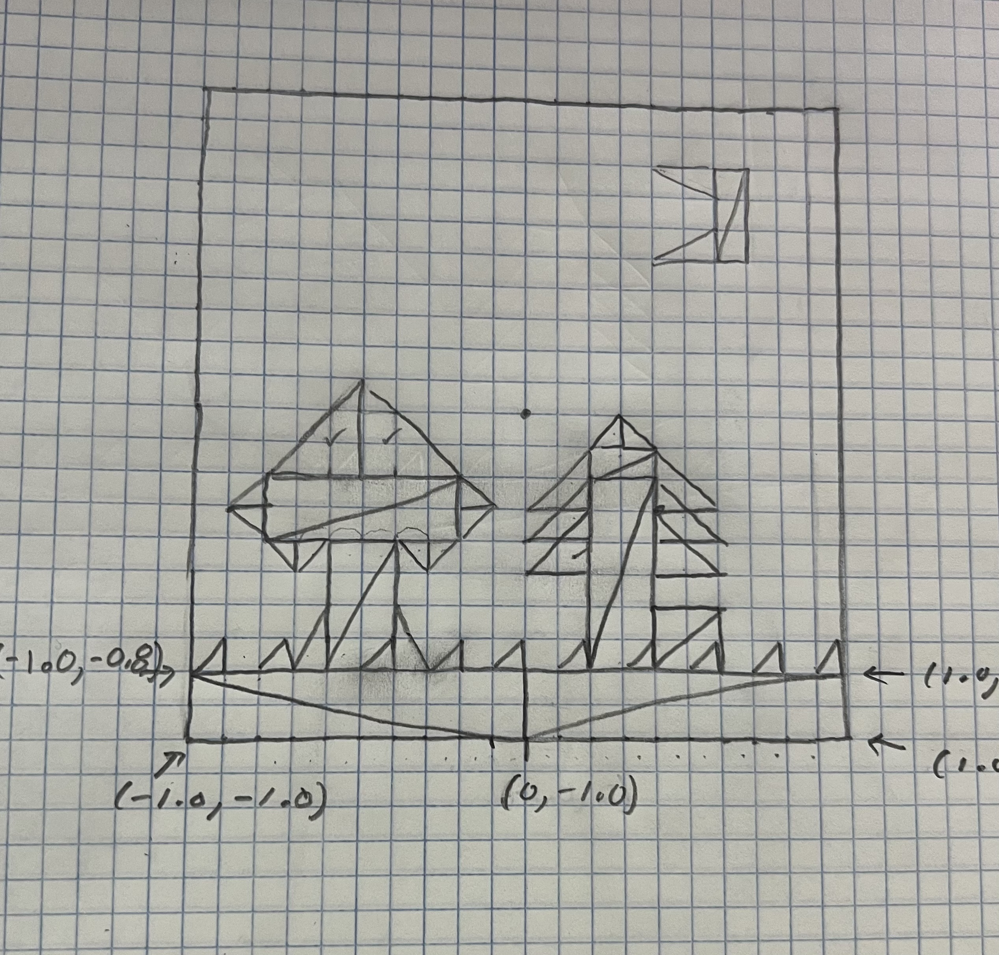

Trey Lutton | tlutton@ucsc.edu | CSE160 - Spring 2026
Clear Canvas Draw Picture Set Canvas Color
Brush Sliders
Color Presets
Red Green Blue Erase
Brush Shapes
Point Triangle Circle
Performance Stats
No Performance Stats to Display.
Reference Image

Improvements
Added eraser. Improved sliders to self-update when selecting a color preset. Added button to set canvas color.